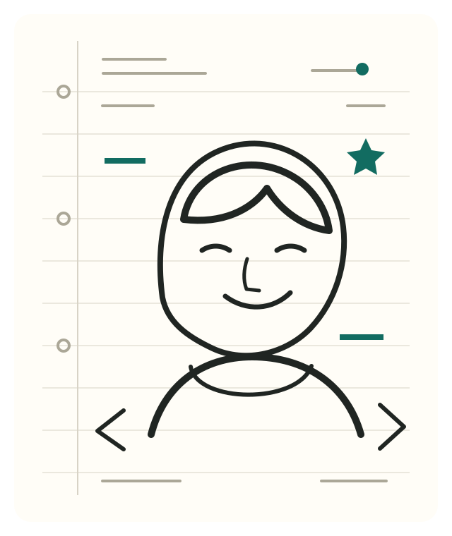

A
Shape the problem
Requirements, information architecture, interface states, accessible interaction flows.
Developer / curious builder
I’m mjy9088. I turn rough questions into small, understandable systems—and keep notes on what the work teaches me.

01 / About
My practice is equal parts making and explaining. I care about the invisible decisions: useful defaults, failure states that tell the truth, and interfaces that stay legible when the happy path ends.
This page is not a finished résumé. It is a living index of public work, current interests, and the craft I am trying to improve.
02 / Skills
A
Requirements, information architecture, interface states, accessible interaction flows.
B
Semantic HTML, resilient CSS, progressive JavaScript, responsive and inclusive UI.
C
Boundary checks, reproducible environments, observability, and tests that exercise outcomes.
03 / Public projects
Repositories are shown as they are today—not frozen into marketing copy.
04 / Contact
Write a note below. This demo validates locally and never sends your message.
Find me on GitHub